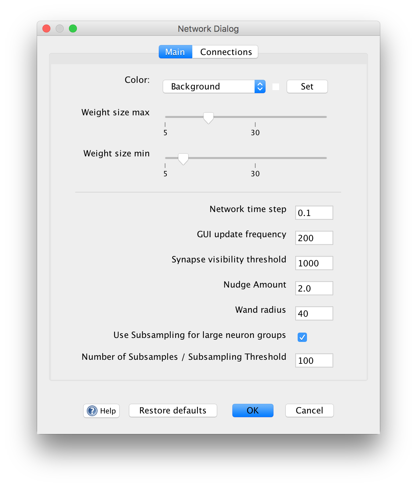

Network Preferences

The Network Preferences dialog can be opened by going to File > Network Preferences... in a network window. The dialog provides ways to alter the graphical, logical, and other properties of a neural network that are not specific to any particular network element.
Main
Color: allows the user to change the color of the various components within the network frame. The colors that can be changed are: Background, Line, Hot node, Cool node, Excitatory weight, Inhibitory weight, Lasso, Selection and Spiking. The current color selection is indicated by the color box located between the combo box and the "Set" button.
Background color: is the color of the network background.
Cool node color: is the color of a neuron that has an activation level less than zero.
Excitatory weight color: is the color of the synapse that has a strength greater than zero.
Hot node color: is the color of a neuron that has an activation level greater than zero.
Inhibitory weight color: is the color of the synapse that has a strength less than zero.
Lasso color: is the color of the line that appears when dragging the mouse to select neurons and weights.
Line color: is the color of the lines that connect neurons.
Selection color: is the color of the box that surrounds items that have been selected.
Spiking color: is the color of a neuron's outline (and outgoing synapse lines) when it spikes.
Weight size max/min: sets the maximum and minimum size a weight can be. This option only changes the graphical size of the weight and has no bearing on how the weight behaves.
Network Time Step: A parameter governing the temporal granularity of the current network simulation. For example, neurons that numerically integrate a differential equqation use this as their integration time step. Intuitively, if the time step is larger the simulation runs faster: when the network is in continuous mode each iteration will advance by this value at each iteration. For more information see the discussion of neuron timing.
Synapse Visibility Threshold: A number to determine whether Synapse Groups should initially have their synapses visible when created. If a new synapse group has more than this number of synapses, individual synapses will be invisible. For example, if set to 0 synapse groups are always in "invisible synapse" mode. If set to 2000 only synapse groups with more than 200 synapses are invisible.
Nudge Amount: is the amount of indent to be used when indenting network files. This option is only valid when "Indent network files" is selected.
Wand Radius: set the width in pixels of the wand tool.
Restore defaults: Restore settings in the main tab to their default values.
Use subsampling: If checked, use subsampling, which means that when a neuron group is large (has more neurons than number of subsamples), only use that many subsamples when sending a vector of activations to external components using couplings.
Number of subsamples: Number of subsamples to take. This value is effectively a threshold as well:only when a neuron group has more than this many neurons is a subsample used when getting activations from a group.
Connections
See Connections.